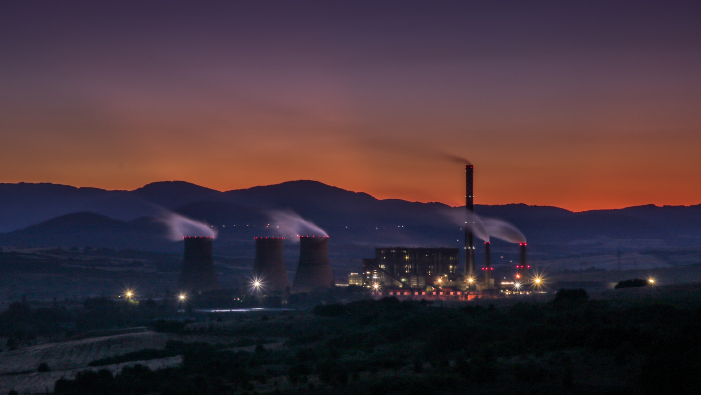

"O que é energia geotérmica?
"Energia geotérmica (ou energia geotermal) é o nome dado à energia que é gerada por meio do calor proveniente do interior do planeta Terra. Trata-se de uma fonte renovável de energia que pode ser utilizada na geração de eletricidade e também para o aquecimento ou resfriamento de residências e edificações no geral. Ela é mais viável em áreas situadas nas proximidades do encontro de placas tectônicas, os blocos semirrígidos que formam a crosta terrestre.
